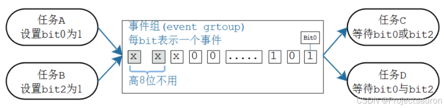
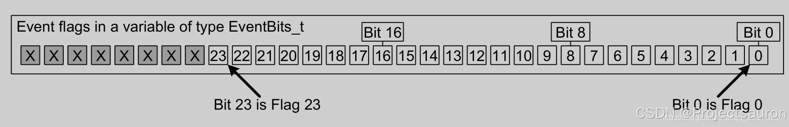
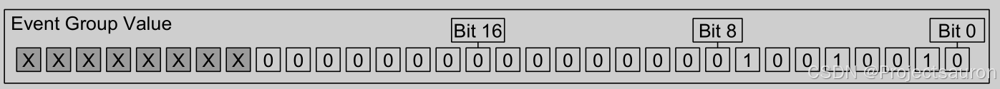

@toc
一、事件组的概念 事件组可以简单地认为就是一个整数：
每一位表示一个事件
每一位事件的含义由程序员决定，比如：Bit0 表示用来串口是否就绪，Bit1 表示按键是否被按下。这些位，值为 1 表示事件发生了，值为 0 表示事件没发生
一个或多个任务、ISR 都可以去写这些位；一个或多个任务、ISR 都可以去读这些位
可以等待某一位、某些位中的任意一个，也可以等待多位

事件组用一个整数来表示，其中的高 8 位留给内核使用，只能用其他的位来表示事件。这个整数的位数由宏 configUSE_16_BIT_TICKS 决定：
如果 configUSE_16_BIT_TICKS 是 1，那么这个整数就是 16 位的，低 8 位用来表示事件
如果 configUSE_16_BIT_TICKS 是 0，那么这个整数就是 32 位的，低 24 位用来表示事件
configUSE_16_BIT_TICKS 是用来表示 Tick Count 的，怎么会影响事件组？这只是基于效率来考虑
如果 configUSE_16_BIT_TICKS 是 1，就表示该处理器使用 16 位更高效，所以事件组也使用 16 位
如果 configUSE_16_BIT_TICKS 是 0，就表示该处理器使用 32 位更高效，所以事件组也使用 32 位

如果 EvenBits_t 变量中的某个位为 1，则表示该位表示的事件以发生。如果 EvenBits_t 变量中的某个位为 0，则表示该位表示的事件未发生。
例如：事件组的值为 0x92，即事件位1、4、7为1，因此仅发生由位1、4、7表示的事件，如下图：

1、事件组和队列、信号量的对比 事件组和队列、信号量等不太一样，主要集中在两个地方：
唤醒谁？
队列、信号量：事件发生时，只会唤醒一个任务
事件组：事件发生时，会唤醒所有符号条件的任务，简单地说它有”广播”的作用
是否清除事件？
队列、信号量：是消耗型的资源，队列的数据被读走就没了；信号量被获取后就减少了
事件组：被唤醒的任务有两个选择，可以让事件保留不动，也可以清除事件
二、事件组函数 1、创建 使用事件组之前，要先创建，得到一个句柄；使用事件组时，要使用句柄来表明使用哪个事件组。有两种创建方法：动态分配内存、静态分配内存。函数原型如下：
1 2 3 4 5 6 7 8 9 10 11 12 xEventGroupCreate (void ) ;xEventGroupCreateStatic ( StaticEventGroup_t *pxEventGroupBuffer) ;
2、删除 对于动态创建的事件组，不再需要它们时，可以删除它们以回收内存。
1 2 3 4 void vEventGroupDelete (EventGroupHandle_t xEventGroup)
3、设置事件 可以设置事件组的某个位、某些位，使用的函数有 2 个：
在任务中使用 xEventGroupSetBits()
在 ISR 中使用 xEventGroupSetBitsFromISR()
有一个或多个任务在等待事件，如果这些事件符合这些任务的期望，那么任务还会被唤醒。函数原型如下：
1 2 3 4 5 6 7 8 9 10 11 12 13 14 15 16 17 18 19 20 21 22 23 24 xEventGroupSetBits ( EventGroupHandle_t xEventGroup, const EventBits_t uxBitsToSet ) ;xEventGroupSetBitsFromISR ( EventGroupHandle_t xEventGroup, const EventBits_t uxBitsToSet, BaseType_t * pxHigherPriorityTaskWoken ) ;
值得注意的是，ISR 中的函数，比如队列函数 xQueueSendToBackFromISR 、信号量函数 xSemaphoreGiveFromISR，它们会唤醒某个任务，最多只会唤醒一个任务。
但是设置事件组时，有可能导致多个任务被唤醒，这会带来很大的不确定性。所以 xEventGroupSetBitsFromISR 函数不是直接去设置事件组，而是给一个 FreeRTOS 后台任务发送队列数据，由这个任务来设置事件组。
如果后台任务的优先级比当前被中断的任务优先级高，xEventGroupSetBitsFromISR 会设置 *pxHigherPriorityTaskWoken 为 pdTRUE。
如果后台任务成功地把队列数据发送给了后台任务，那么 xEventGroupSetBitsFromISR 的返回值就是 pdPASS。
4、等待事件 使用 xEventGroupWaitBits 来等待事件，可以等待某一位、某些位中的任意一个，也可以等待多位；等到期望的事件后，还可以清除某些位。函数原型如下：
1 2 3 4 5 EventBits_t xEventGroupWaitBits ( EventGroupHandle_t xEventGroup, const EventBits_t uxBitsToWaitFor, const BaseType_t xClearOnExit, const BaseType_t xWaitForAllBits, TickType_t xTicksToWait ) ;
unblock condition
函数参数说明列表如下：
参数
说明
xEventGroup等待哪个事件组
uxBitsToWaitFor等待哪些位，哪些位要被测试
xWaitForAllBits怎么测试？是”AND”还是”OR”？
xClearOnExit函数提出前是否要清除事件？
xTicksToWait如果期待的事件未发生，阻塞多久。
返回值返回的是事件值，
可以使用 xEventGroupWaitBits() 等待期望的事件，它发生之后再使用 xEventGroupClearBits() 来清除。但是这两个函数之间，有可能被其他任务或中断抢占，它们可能会修改事件组。
可以使用设置 xClearOnExit 为 pdTRUE，使得对事件组的测试、清零都在 xEventGroupWaitBits() 函数内部完成，这是一个原子操作。
5、同步点 使用 xEventGroupSync() 函数可以同步多个任务：
可以设置某位、某些位，表示自己做了什么事
可以等待某位、某些位，表示要等等其他任务
期望的时间发生后，xEventGroupSync() 才会成功返回。
xEventGroupSync 成功返回后，会清除事件
函数原型如下：
1 2 3 4 EventBits_t xEventGroupSync (EventGroupHandle_t xEventGroup, const EventBits_t uxBitsToSet, const EventBits_t uxBitsToWaitFor, TickType_t xTicksToWait) ;
参数列表如下：
参数
说明
xEventGroup哪个事件组
uxBitsToSet要设置哪些事件，完成了哪些事件
uxBitsToWaitFor等待那个位、哪些位
xTicksToWait如果期待的事件未发生，阻塞多久。
返回值返回的是事件值，
三、例程 1、例一：等待多个任务 1 2 3 4 5 6 7 8 9 10 11 12 13 14 15 16 17 18 19 20 21 22 23 24 25 26 27 28 29 30 31 32 33 34 35 36 37 38 39 40 41 42 43 44 45 46 47 48 49 50 51 52 53 54 55 56 57 58 59 60 61 62 63 64 65 66 67 68 69 70 71 72 73 74 75 76 77 78 #define FIRST_TASK_BIT ( 1UL << 0UL ) #define SECOND_TASK_BIT ( 1UL << 1UL ) #define ISR_BIT ( 1UL << 2UL ) static void vEventBitSettingTask ( void *pvParameters ) const TickType_t xDelay200ms = pdMS_TO_TICKS( 200UL ), xDontBlock = 0 ;for ( ;; )"Bit setting task -\t about to set bit 0.\r\n" );"Bit setting task -\t about to set bit 1.\r\n" );static uint32_t ulEventBitSettingISR ( void ) static const char *pcString = "Bit setting ISR -\t about to set bit 2.\r\n" ;void *) pcString,0 ,static void vEventBitReadingTask ( void *pvParameters ) const EventBits_t xBitsToWaitFor = ( FIRST_TASK_BIT |for ( ;; )if ( ( xEventGroupValue & FIRST_TASK_BIT ) != 0 )"Bit reading task -\t Event bit 0 was set\r\n" );if ( ( xEventGroupValue & SECOND_TASK_BIT ) != 0 )"Bit reading task -\t Event bit 1 was set\r\n" );if ( ( xEventGroupValue & ISR_BIT ) != 0 )"Bit reading task -\t Event bit 2 was set\r\n" );int main ( void ) "Bit Setter" , 1000 , NULL , 1 , NULL );"Bit Reader" , 1000 , NULL , 2 , NULL );"Int Gen" , 1000 , NULL , 3 , NULL );for ( ;; );return 0 ;
当 xEventGroupWaitBits() 中 xWaitForAllBits 设置为 pdFALSE 的运行结果如下：
1 2 3 4 5 6 7 8 9 10 11 12 13 14 15 Bit setting task - about to set bit 1. 1 was set set bit 0. 0 was set set bit 1. 1 was set set bit 2. 2 was set set bit 0. 0 was set
当 xEventGroupWaitBits() 中 xWaitForAllBits 设置为 pdTRUE 的运行结果如下：
1 2 3 4 5 6 7 8 Bit setting task - about to set bit 1. set bit 0. set bit 2. 1 was set 0 was set 2 was set
2、例二：同步任务 1 2 3 4 5 6 7 8 9 10 11 12 13 14 15 16 17 18 19 20 21 22 23 24 25 26 27 28 29 30 31 32 33 34 35 36 37 38 39 40 41 42 43 44 45 46 47 48 49 #define FIRST_TASK_BIT ( 1UL << 0UL ) #define SECOND_TASK_BIT( 1UL << 1UL ) #define THIRD_TASK_BIT ( 1UL << 2UL ) static void vSyncingTask ( void *pvParameters ) const TickType_t xMaxDelay = pdMS_TO_TICKS( 4000UL );const TickType_t xMinDelay = pdMS_TO_TICKS( 200UL );const EventBits_t uxAllSyncBits = ( FIRST_TASK_BIT |for ( ;; )NULL ), "reached sync point" );NULL ), "exited sync point" );int main ( void ) "Task 1" , 1000 , FIRST_TASK_BIT, 1 , NULL );"Task 2" , 1000 , SECOND_TASK_BIT, 1 , NULL );"Task 3" , 1000 , THIRD_TASK_BIT, 1 , NULL );for ( ;; );return 0 ;
运行结果如下：
1 2 3 4 5 6 7 8 9 10 11 12 13 14 15 16 17 18 At time 211664 : Task 1 reached sync point211664 : Task 1 exited sync point211664 : Task 2 exited sync point211664 : Task 3 exited sync point212702 : Task 2 reached sync point214400 : Task 1 reached sync point215439 : Task 3 reached sync point215439 : Task 3 exited sync point215439 : Task 2 exited sync point215440 : Task 1 exited sync point217671 : Task 2 reached sync point218622 : Task 1 reached sync point219402 : Task 3 reached sync point219402 : Task 3 exited sync point219402 : Task 2 exited sync point219402 : Task 1 exited sync point